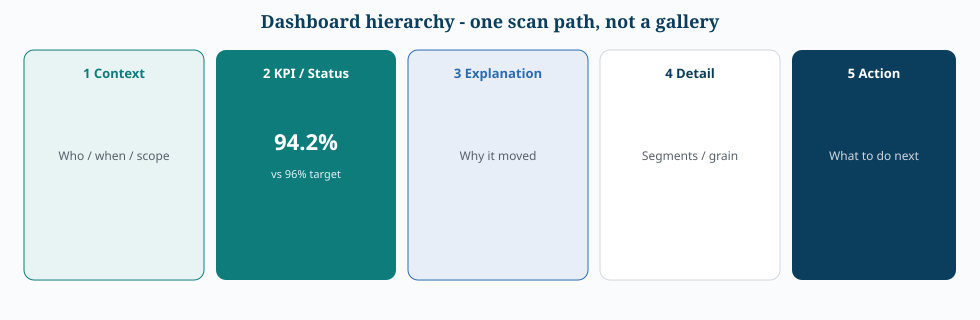
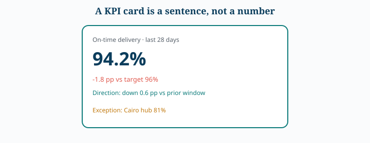

Power BI Visualization Playbook
1. Visual Selection
- Clustered Bar/Column: category comparison and ranking.
- Line: connected time/sequence.
- Scatter: relationships, clusters, outliers.
- Matrix: dense comparison and conditional formatting.
- Small Multiples: repeated comparisons across groups.
- Decomposition Tree: interactive driver exploration.
- Key Influencers: exploratory association analysis، وليس إثباتًا للسببية.
flowchart TD
Q[What is the job?] --> C{Compare categories?}
C -->|Yes| B[Clustered bar / column. Sort. Zero baseline.]
Q --> T{Connected sequence?}
T -->|Yes| L[Line. Not a bar of months unless ranking months.]
Q --> R{Relationship / outliers?}
R -->|Yes| S[Scatter. Trend is a diagnosis, not causality.]
Q --> G{Same view across groups?}
G -->|Yes| M[Small multiples. Same scale.]
Q --> X{Need drivers, not a pretty chart?}
X -->|Yes| D[Decomposition tree / drill-through. Key Influencers stay exploratory.]2. Measures vs Calculated Columns
استخدم Measures عندما تحتاج قيمة ديناميكية تستجيب للـfilter context. استخدم Calculated Columns عندما تكون القيمة row-level وتحتاجها grouping/sorting أو منطقًا ثابتًا؛ مع الانتباه إلى model size.
3. Performance-aware Visualization
أسباب شائعة للبطء:
- كثرة visuals في الصفحة.
- high-cardinality axes.
- measures مكلفة تتكرر عبر visuals.
- جداول شديدة التفصيل.
- interactions غير ضرورية.
ابدأ بـPerformance Analyzer لتحديد عنق الزجاجة، ثم عالج model/query/visual حسب السبب.
flowchart TD
P[Page feels slow] --> A[Performance Analyzer]
A --> V{Visual time?}
V -->|Yes| V2[Fewer visuals. Drop cross-highlight. Top N + Other.]
A --> Q{Query / measure time?}
Q -->|Yes| Q2[Simplify measures. Avoid iterator overkill. Star schema.]
A --> M{Model size?}
M -->|Yes| M2[Stop calculated columns that should be measures. Reduce grain.]4. High Cardinality
استخدم Top N + Other عندما تكون التجميعة meaningful، أو drill-through للـlong tail، أو جدولًا searchable للمعلومات الدقيقة. لا تجعل الصفحة قائمة غير قابلة للقراءة.
5. Color & Accessibility
اجعل اللون يحمل معنى واضحًا وثابتًا، ولا تعتمد عليه وحده لتمثيل الحالة. حافظ على contrast مناسب واتساق الـtheme.
6. Log Scale Caution
دعم الـlog axis يختلف حسب visual/configuration. لا تعرض LOG10(value) وتترك المستخدم يظن أنها القيمة الأصلية؛ يجب أن يكون التحويل واضحًا في العنوان/المحور.
7. Interview Frame
عند سؤال: “How would you improve this dashboard?” استخدم:
Business Question → Visual Ambiguity → Data/Measure Issue → Interaction Design → Performance → Accessibility.



